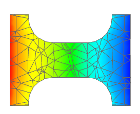

Switch the plotted result
 Post-Processing Navigator
Post-Processing Navigator
-

 Solution 1 (expand)
Solution 1 (expand)
-
Stress - Element-Nodal (expand)
-
YY
-
 Apply
Apply
Note
A new post view is not created when you choose Apply.